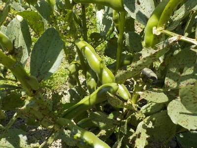
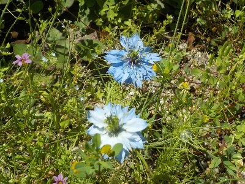
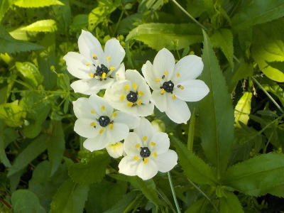
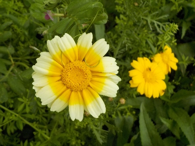

空豆を収穫して食べました。
2024/05/25

そら豆が出来たので湯がいて食べました。
美味しい。
冷凍して保存食にもしますが、旬のうちにドンドン食べたいと思いました。
2024/05/25

そら豆が出来たので湯がいて食べました。
美味しい。
冷凍して保存食にもしますが、旬のうちにドンドン食べたいと思いました。
2024/05/25

鉢とかプランターで育ててた矢車草ですが 、タネが落ちて雑草化してました。
草丈が低いので野生化しても生存率は低いんだろうな。
2024/05/18

毎年咲いててキレイだなとは思って見ていますが、名前は何だったかな？
ネットで画像検索したら「オーニソガラム」って出ました。覚えにくい名前なので、明日には忘れているんだろうな。
2024/05/05

黄色い花が咲いてました。菊のようなカモミールのような。
検索したら春菊と出ました。春菊の花ってキレイですね。春菊は1年草だそうなので、この後枯れますね。
過去の日記
畑仕事じゃないよ。